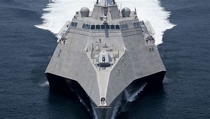
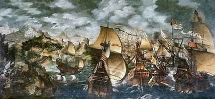

¿Qué son los barcos navales?
Los barcos navales son buques diseñados para uso militar. Cumplen funciones de defensa, ataque, vigilancia y transporte en los mares y océanos.
Imágenes de barcos navales

El USS Iowa es un acorazado de la clase Iowa de la Armada de EE. UU.
Los acorazados de la Clase Iowa fueron seis buques diseñados por la Armada de EE. UU. entre 1939 y 1940 para escoltar portaaviones en la Segunda Guerra Mundial. Solo cuatro fueron completados; los otros dos fueron cancelados. Fueron la última clase de acorazados construida por EE. UU.,
considerados entre los más poderosos de la historia, aunque finalmente fueron superados por los portaaviones como buques principales.
Participaron en todos los conflictos importantes de EE. UU. en la segunda mitad del siglo XX. Durante la Segunda Guerra Mundial escoltaron portaaviones y atacaron posiciones japonesas. Luego, apoyaron en la Guerra de Corea y el New Jersey fue reactivado para la Guerra de Vietnam.
En los años 80, los cuatro fueron modernizados con misiles y usados nuevamente. En la Guerra del Golfo (1991), el Missouri y el Wisconsin atacaron objetivos iraquíes. Finalmente, fueron desarmados en los 90 y convertidos en museos.

Una flota en formación muestra el poder estratégico de una armada.
Una flota en formación muestra la capacidad estratégica de una armada, destacando no solo su poder táctico, sino también su cohesión y preparación. Las flotas se organizan para misiones como el control marítimo, la protección de intereses nacionales y la disuasión de amenazas. Las formaciones más comunes son: en línea, para un uso efectivo del poder de fuego; en columna, para maniobras rápidas; y en cuña, para ataques rápidos y protección de la unidad principal. Además de su función en combate, la formación proyecta poder y demuestra la superioridad naval de una nación.

Los buques modernos están equipados con alta tecnología de combate y defensa.
Los buques de guerra han experimentado una evolución significativa desde la antigüedad hasta la actualidad. En sus primeros tiempos, los barcos eran impulsados por remos y velas, como las trirremes griegas y los navíos romanos, utilizados para combates y abordajes. Durante la Edad Media, las galeras y los galeones empezaron a integrar cañones y mejoraron la maniobrabilidad.
Con la Revolución Industrial en el siglo XIX, los buques de guerra se transformaron con el uso de vapor y acero, destacando el **HMS Warrior** y el **USS Monitor**. En el siglo XX, los acorazados como el **HMS Dreadnought** dominaron la guerra naval, aunque la Segunda Guerra Mundial vio el auge de los portaaviones, como el **USS Enterprise**, y el uso de submarinos nucleares como el **USS Nautilus**.
Hoy en día, los portaaviones nucleares como el **USS Gerald R. Ford**, los destructores de misiles y submarinos nucleares continúan siendo esenciales, mientras que los buques de guerra modernos incorporan tecnología avanzada. El futuro de la guerra naval se centra en la automatización, la inteligencia artificial y los sistemas no tripulados, con una mayor dependencia de la guerra cibernética y capacidades de detección.